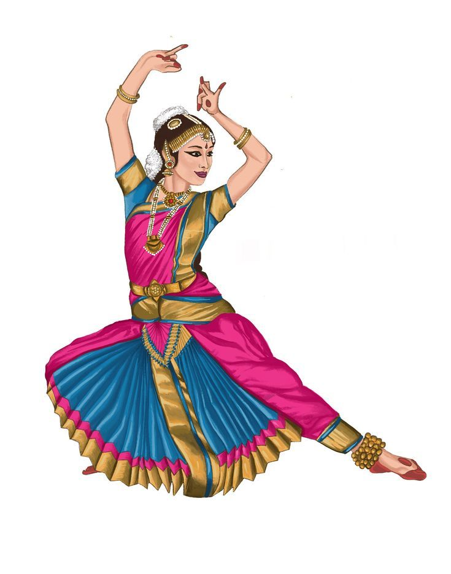

Tamil Nadu - Cultural Heritage
Cultural Aspects of Tamil Nadu
Tamil Nadu has a rich cultural heritage that dates back thousands of
years. The state is known for its unique art, music, dance, and
literature.
Major Cultural Elements
- Bharatanatyam - The classical dance form of Tamil Nadu
-
Carnatic Music - One of the oldest music traditions in India
-
Tamil Literature - Ancient works like Thirukkural and Sangam
poetry
-
Folk Arts - Unique folk dances like Karakattam and Mayilattam
Famous Cultural Events
| Festival |
Significance |
Celebration Time |
| Pongal |
Harvest festival, dedicated to the Sun God |
January |
| Natyanjali |
Dance festival dedicated to Lord Nataraja |
February-March |
| Chithirai Festival |
Grand festival celebrated at Madurai Meenakshi Temple |
April |
Bharatanatyam - Tamil Nadu’s Classical Dance

One of the oldest classical dance forms in India
|